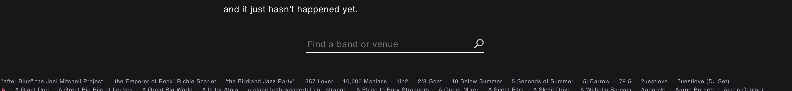

Every Year, we celebrate August 15 as our Independence Day and eagerly wait for the Prime Minister’s speech and then there happens discussion ranging from news hour debates to intelluctal neighbourhood talks!
All these speeches have been disected and analysed separately, but not ever put side by side to measure our progress as a nation.
India will be celebrating 75 Years of Independence in 2022, this data visualization will be an attempt to look at India’s journey in these years from the ‘ramparts of Red Fort’.

In all the years since Independence, we have seen 15 Different Prime Ministers. In their tenures, and 9 of them have delivered multiple Independence Day speeches; 4 of them delivered one and two none.
Knowing this, we start with the part which is latest and we are more familiar with. The two heavily compared Prime Ministers of India; Manmohan Singh and Narendra Modi.
We performed sentiment analysis and then in 21st century made a list of 21 topics and checked how they stood against each other in the speeches.
Assumption: It is assumed that topic with a higher word count was more important than the topic with a lower word count. The length at which a particular topic was talked about is ignored for a while.
Following are the 20 topics that have been talked about from the Red Fort, hover over them to see how they fared as years passed. We have also tried to incorporate incidences/news articles about what was happening when there is a sudden rise or fall in the ranking of a particular topic.
The visual encoding does justice to the data they had for the bands that were successful even before coming to US, at least they could have included the date of their first show. This missing information would have painted a slightly more realistic picture.
The form of the visualization makes me realise that the band culture in US is extremely crowded. Music enthusiasts have a lot to choose from. But as we scroll down, the size of event increases but we see an exponential reduction in the number of bands until the crowd reached 7000+ only 21 of them remain. The flow of the viz is very smooth and there are adequate movements that are keeping the curiosity of the reader intact.
It is also important to mention that designers have taken due diligence in reverse scrolling. The way the bands (dots) fall back in line is very aesthetically pleasing. I am myself guilty of looking at the animation for at least a 100 times.

Embedding the music of top 21 bands is a masterstroke. It helps in spreading the music culture and make it extremely easier for the audience to discover new music and keeps the them in the same tab! (Great and Profitable UX!)
The narrative of reaching the ‘Centre Stage’ and making it big is clearly highlighted by the form used. But the pink 21 dots have the affordance of click that is absent. They could have added the Band’s name on the hower and their music played on click.
The second view is the good old timeline following the advice of Ben Shneiderman, telling us exactly what it should be how long does it take to make it big so that you plan accordingly!
Till now everything was great, realising article is over I decided to write the review, only on a closer look I realised that, that illegible and almost hyperlink look alike isn’t the footer but a third view highlighting all the bands that were somehow surviving!
It’s very empathetic of them to mention these bands bit the way it is done can be rethought. That absurd search bar serves as an hinderance to any casual reader.
Overall, that you so much for making this. Russel and Dan did a great job in telling us something that we needed to know but didn’t know.
A food for thought for the readers, instead of the dots reaching the ‘centre stage’ what would have happened if they were going out and reaching new heights? Would that have been a better visual?